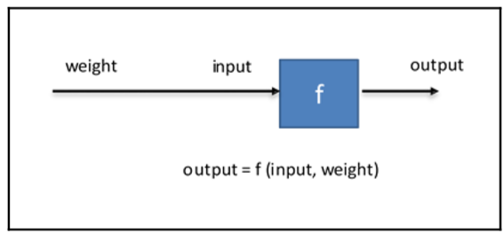

声明: 本文由DataScience原创发表, 转载请注明本文链接mlln.cn, 并在文后留言
转载.
本文代码运行环境:
- windows10
- python3.6
- jupyter notebook
- tensorflow 1.x
什么是人工神经网络
首先必须澄清, 人工神经网络和生物神经网络没有必然关系, 只是人类为了通俗理解而作的一个比喻. 这不是我的观点, 是吴恩达在他的深度学习课程中多次重申的.
人工神经网络(后文简称神经网络)由很多神经元相互链接构成一个网络, 而所谓的链接其实就是计算路径, 所以, 神经网络可以看成是一个计算图, 神经元就是一个计算, 链接神经元的边就是数据流通的路径. 下图是一个经典的神经网络. 圆圈代表神经元, 边代表计算路径.

通常我们把一个神经网络分为三层: 输入层, 隐藏层和输出层. 输入层其实就是你的输入的数据, 比如, 我们现在有个向量X=[1,2,3], X的每个元素可以当作输入层神经元的激活值, 比如第一个神经元的激活值是1, 第二个神经元的激活值是2.
得到了输入层的激活值, 我们接着计算隐藏层的激活值, 如果你懂得点线性代数, 你可以用矩阵的运算得到隐层的激活向量$A_1$:
$$ A_1 = sigmoid(W_1 X) $$
$W_1$代表的是输入层和隐藏层之间每个神经元两两连接的线的权重, $A_1$表示图中的$[a_4, a_5, a_6, a_7]$, $sigmoid$表示激活函数, 它就是一个函数, 如果不知道可以先不理会. 从上图中, 你可以看出, $W_1$的形状是 4x3, 因为隐层是4个神经元, 输入层是3个神经元. 如果你没有学过线性代数, 那么你学习机器学习还是很有难度的, 但是没关系, 我这里列出计算隐层第一个神经元激活量$a_4$的公式:
$$ a_4 = sigmoid(x_1 * a_{41} + x_2 * a_{42} + a_{43}) $$
这个公式里都是实数运算, 不涉及任何的矩阵运算. 到此, 我们就得到了隐藏层的激活量. 然后才能计算输出层的激活量, 算法和之前是一样的.
$$ \hat Y = sigmoid(W_2 A_1) $$
神经网络如何进行学习
神经网络中可变的量就是上面提到的权重$W_1$和$W_2$, 后面我们统称为$W$, 当然不同的神经网络架构还会有不同的参数, 但是为了简便起见, 我们暂时只使用权重. 有过小学经验的你应该可以知道, 通过改变$W$的值就能改变输出层的激活量Y. 神经网络科学家的任务就是通过让机器学习已经准备好的训练数据, 找到最佳的W值, 让神经网络的计算结果$\hat Y$尽量接近训练数据$Y$.
所以所谓的学习, 就指的是调整W的数值, 以便降低$\hat Y$
世界上最简单的一个神经网络
下面我们就用代码来实现一个简单的神经网络, 它只有两层(输入和输出), 一个神经元.
引入用到的库
1 | import tensorflow as tf |
1 | # 输入值, 只是一个实数 |
计算损失值, 也就是衡量模型好坏的指标, 其实就是$Y$和$\hat Y$
1 | loss = (expected_output - output) ** 2 |
设置优化方法, 我们就用最普通的梯度下降法即可, 目标是让loss最小化, loss越小表示神经网络的计算所得与期望所得越接近.
1 | optimizer = tf.train.GradientDescentOptimizer(0.025).minimize(loss) |
训练模型, 让权重weight调整大小, 以便于让输出值output接近0, 总共学习100次:
1 | %matplotlib inline |
可视化训练过程:
1 | import matplotlib.pyplot as plt |

总结
通过上面的例子你应该可以知道机器学习的本质–调整权重(参数)以便于让输出结果靠近我们的期望结果. 而且你也看到了, 机器是能够调整参数的.
注意
本文由jupyter notebook转换而来, 您可以在这里下载notebook
统计咨询请加QQ 2726725926, 微信 mllncn, SPSS统计咨询是收费的
微博上@mlln-cn可以向我免费题问
请记住我的网址: mlln.cn 或者 jupyter.cn